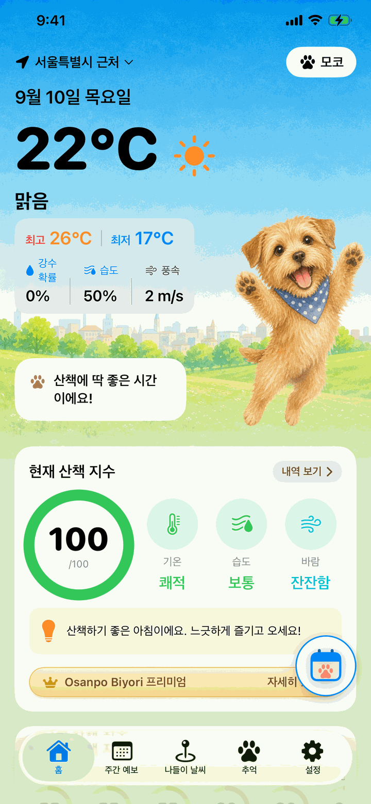
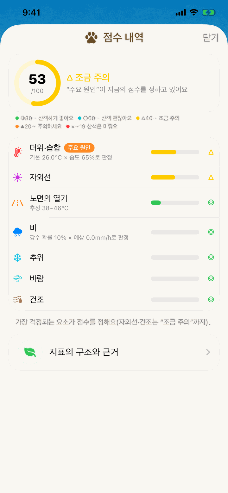
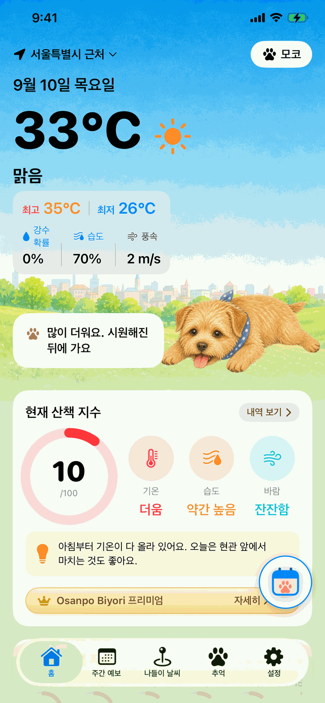
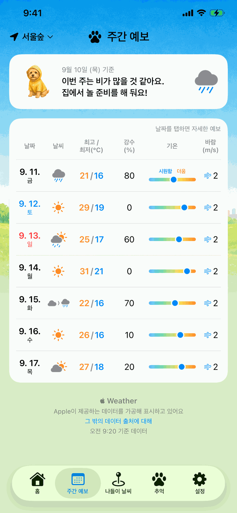
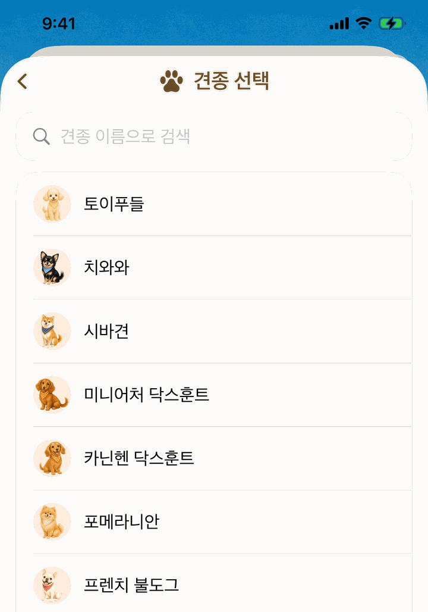
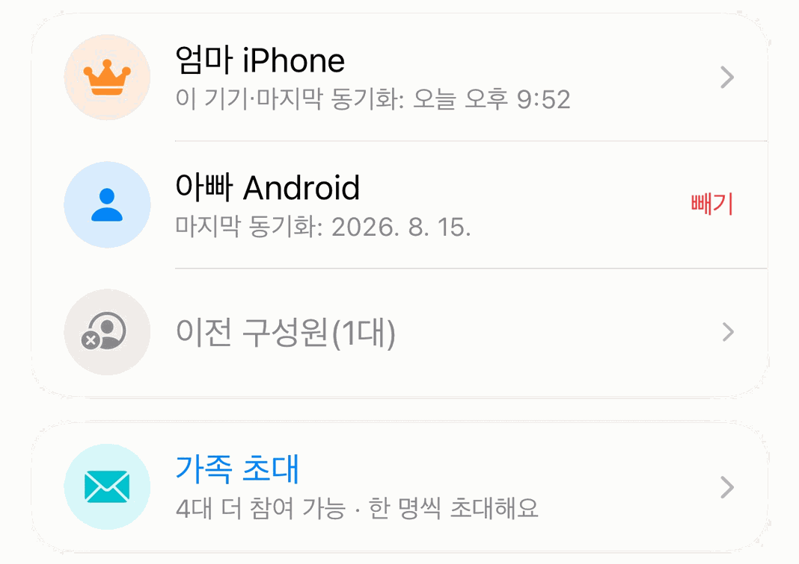
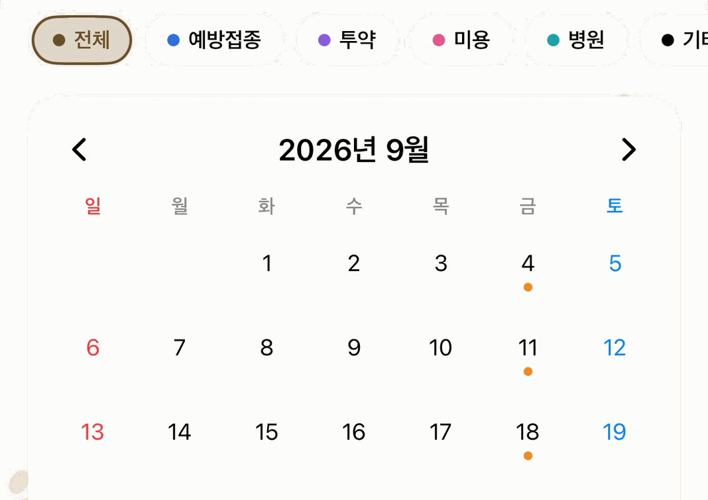
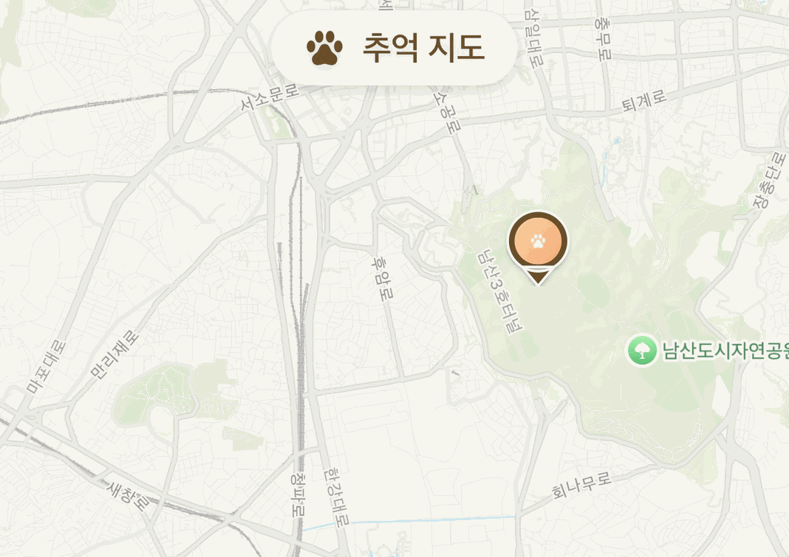

사람에게는 기분 좋은 날씨라도, 발밑은 뜨거울지 몰라요.
일기예보의 숫자
강아지가 느끼는 뜨거움
Osanpo Biyori는 기온 뒤에 숨어 있는 것까지 살펴봐요. 노면의 뜨거움, 습도, 바람, 자외선. 이것들을 모아 “지금 나가도 괜찮을까?”라는 한마디로 바꿔서 매일 아침 전해 드려요.

오늘의 산책 지수
기온·습도·비·바람·노면 온도로 오늘 산책하기 좋은 정도를 0~100으로 알려 줘요. 시간별 지수와 “추천 산책 시간”도 함께. 아침에 한 번 열어 보면 오늘 계획이 정해져요.

왜 이 점수인지, 전부 보여 드려요
더위·노면·비·추위·바람·자외선·건조의 7가지 요소로 나눠 점수 내역을 언제든 확인할 수 있어요. 판단의 근거와 출처도 앱 안에 실어 두었으니, 그대로 믿지 말고 직접 확인해 보세요.

노면의 뜨거움과 열사병 위험
태양의 높이와 구름·비의 상태로 아스팔트의 뜨거움을 추정해, 발바닥 화상이 걱정되는 시간대를 알려 줘요. 열사병은 일본 환경성의 더위 지수(WBGT) 구간에 따라 판단해요. 단두종, 어린 강아지, 노령견은 더 신중하게 봐요.

일주일 날씨를 한눈에
앞으로 7일의 최고·최저 기온, 강수 확률, 바람을 한눈에 보고 산책과 나들이를 미리 계획할 수 있어요. 애견 운동장이나 여행지를 지점으로 등록하면 그곳의 강아지 날씨도 확인할 수 있어요.

우리 아이에게 맞춰서
견종·나이·체형을 등록하면 모든 판단이 그 아이에게 맞춰 바뀌어요. 120종의 견종을 지원하고, 여러 마리를 키운다면 모두 등록할 수 있어요.

같은 날씨라도, 아이마다 답은 달라요.
주둥이가 짧은 아이는 열을 잘 내보내지 못해요. 땅에 가까운 소형견은 노면의 열기를 그대로 받아요. 두꺼운 이중모 아이와 추위에 약한 단모 아이도, 쾌적한 하루는 서로 달라요. Osanpo Biyori는 그 차이를 제대로 계산에 넣어요.

Osanpo Biyori 프리미엄
기본 기능은 무료 그대로. 조금 더 도움이 필요할 때, 프리미엄이 이 4가지를 더해 줘요.
-
가족 공유

온 가족이 함께, 우리 아이 기록을 하나로
체중·돌봄 기록·추억 지도를 가족의 기기와 동기화해요. 초대 코드만 보내면 iPhone과 Android 사이에서도 공유할 수 있어요. 1대만 가입하면 되고, 초대받은 가족(최대 5대)은 무료로 캘린더와 추억 지도도 쓸 수 있어요.
-
캘린더

우리 아이의 일정을, 원하는 대로 캘린더에
미용, 병원, 심장사상충 예방 등 우리 아이에게 필요한 일정을 자유롭게 추가하고, 사진과 메모로 기록할 수 있어요. 예방접종과 진드기 예방 일정은 무료로도 쓸 수 있어요.
-
추억 지도

산책의 추억을, 사진과 함께 지도에
함께 걸은 곳에 사진과 한마디를 남겨요. 핀이 늘어날수록 우리 아이와의 추억이 지도가 되어 가요. 무료로도 3개까지 써 볼 수 있어요.
-
매일 바뀌는 배경

사진 10장과 여러 아이가, 날마다 홈에
무료 버전은 늘 같은 사진 1장이 보여요. 프리미엄이면 “오늘은 어떤 아이일까?”가 매일 아침의 작은 즐거움이 돼요.
대한민국 월 3,300원가격은 국가·지역에 따라 다르며 구매 전에 표시돼요. iOS와 Android 모두에서 가입할 수 있어요.
가족이 캘린더와 추억 지도를 쓸 수 있는 건 공유를 시작한 기기가 프리미엄에 가입해 있는 동안이에요. 일본 국내에서는 실시간 알림과, 15시간 뒤까지의 비 예상·낙뢰 레이더도 프리미엄에 포함돼요. 매일 바뀌는 배경에 나오는 건 일러스트가 준비된 견종이에요. 결제와 해지 조건은 일본 특정상거래법에 근거한 표기(일본어)를 확인해 주세요.
안심하고 쓸 수 있어요
- 광고가 없어요
- 기본 기능은 무료. 프리미엄은 선택이에요
- 계정 등록이 필요 없어요
- 우리 아이 정보와 등록한 지점은 휴대폰 안에만 저장돼요(가족 공유와 실시간 알림을 쓸 때는 예외. 자세한 내용은 개인정보 처리방침)
- 위치 정보는 날씨를 가져오는 데만 써요
- 위치 정보를 허용하지 않아도, 지점을 등록하면 모든 기능을 쓸 수 있어요
- 각 지표의 근거와 출처를 앱 안에 공개하고 있어요

자주 묻는 질문
위치 정보를 허용하지 않아도 쓸 수 있나요?
네. 홈 화면의 지점 메뉴에서 지점을 등록하면 모든 기능을 쓸 수 있어요.
표시되는 노면 온도는 실측값인가요?
아니요. 태양의 높이와 구름의 양으로 추정한 참고치예요. 나가기 전에 손을 땅에 5초 대어 확인하는 “5초 체크”도 함께 해 주세요.
일본 밖에서도 쓸 수 있나요?
네. 비구름 레이더, 실시간 알림, 기상 특보, 실측 현재 기온을 빼면 모든 기능을 어디에서나 쓸 수 있어요. 이 네 가지는 일본 기상청의 데이터를 쓰기 때문에 일본 국내 지점만 대상이에요.
무료로도 계속 쓸 수 있나요?
네. 산책 지수, 열사병과 노면 온도 판정, 주간 예보 등 기본 기능은 무료예요. 돌봄 캘린더도 예방접종이나 진드기 예방 같은 일정은 무료로 쓸 수 있어요. Osanpo Biyori 프리미엄은 여기에 기능을 더하는 선택형 플랜이에요.
Osanpo Biyori 프리미엄은 Android에서도 쓸 수 있나요?
네. iOS와 Android 어느 쪽에서도 가입할 수 있어요. 기본 기능은 양쪽 모두 무료예요.
가족과 공유하려면 가족 모두가 가입해야 하나요?
아니요. Osanpo Biyori 프리미엄은 가족 공유를 시작하는 기기 1대만 가입하면 돼요. 초대 코드로 참여하는 가족(최대 5대)은 무료이고, iPhone과 Android 사이에서도 공유할 수 있어요.